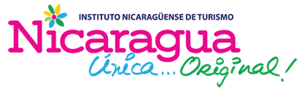

ACCESO DEL EXPOSITOR
Preguntas en directo
Entrá con la cuenta autorizada en Firebase Authentication. Los participantes no necesitan registrarse.
0 preguntas0 pendientesConectando…

MODERACIÓN PRIVADA · ACCESO RESTRINGIDOEntrá con la cuenta autorizada en Firebase Authentication. Los participantes no necesitan registrarse.